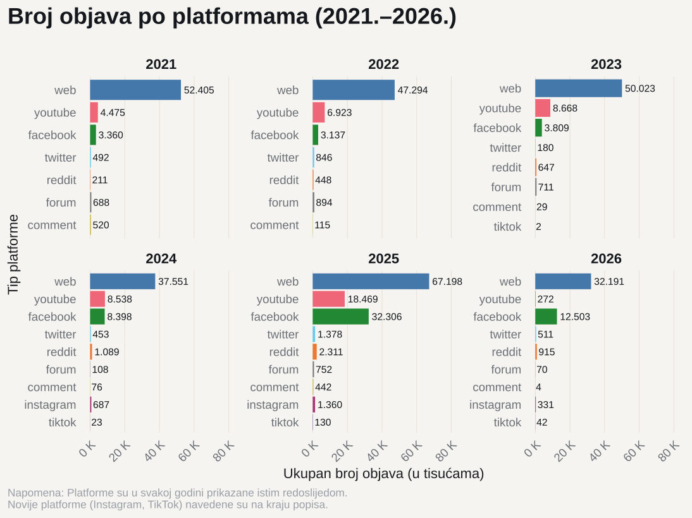
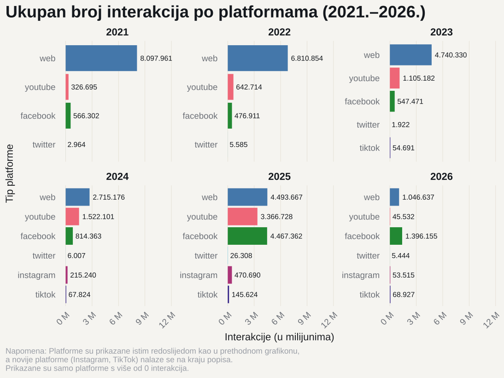
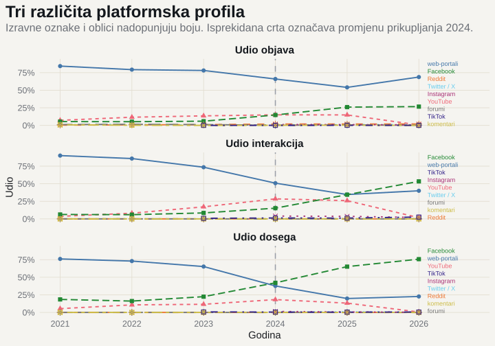
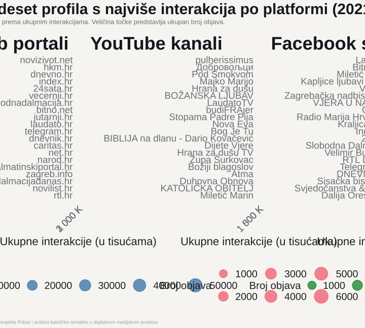
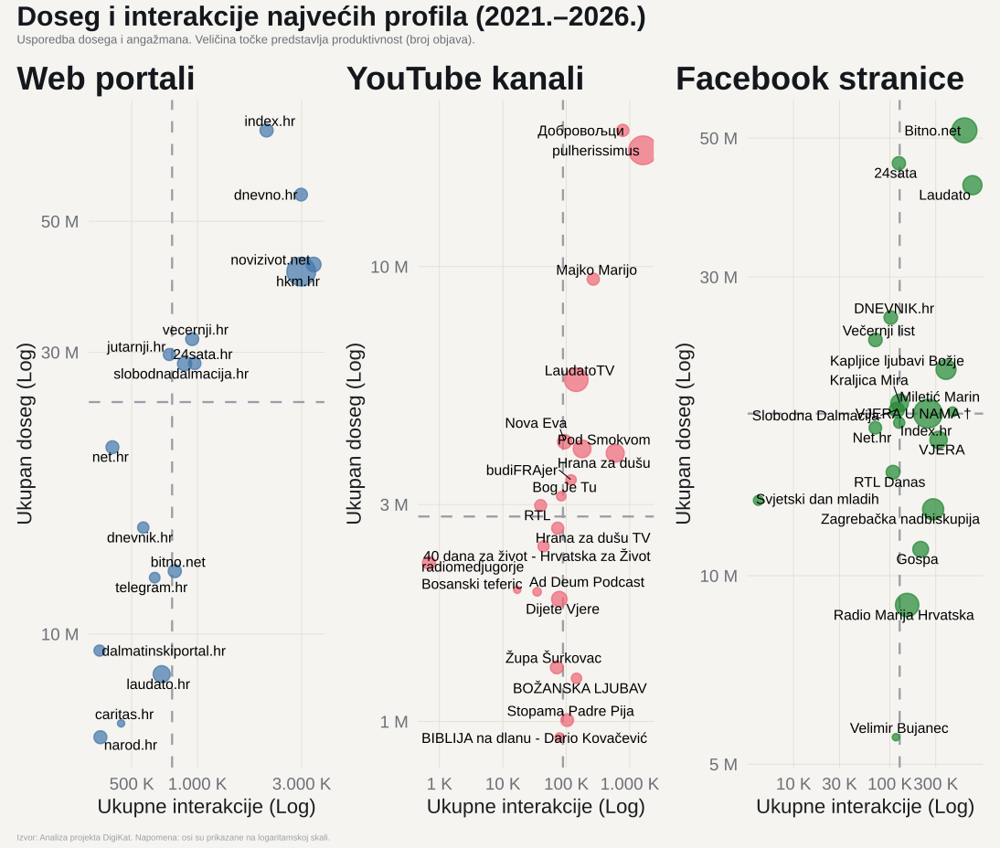

Mapa ekosustava — katolički digitalni prostor u RH (2021.–2026.)
Mapiranje digitalne medijske arene
Mapa ekosustava
Akteri
Doseg
Mapa ekosustava uspoređuje volumen objava, zabilježene interakcije i procijenjeni doseg po platformama i izvorima u službenom korpusu DigiKat.
Pregled medijskog ekosustava
Ažurirano24. kolovoza 2026. Podaci zaključno s11. lipnja 2026. StatusAžurira se
Sažetak u 60 sekundi
Mapa pokazuje tko objavljuje o katoličkim temama i gdje se bilježi najveći odjek.
- Web-portali nose najveći dio opaženog volumena.
- Udio platforme u objavama nije jednak njezinu udjelu u interakcijama ili procijenjenom dosegu.
- Izvori se zato uspoređuju unutar iste platforme i iste mjere.
Može se zaključiti kako je prikupljeni prostor strukturiran. Ne može se zaključiti koja platforma uzrokuje veći utjecaj ili promjenu publike. Pojedinačni izvor može se provjeriti u alatu Moj medij.
Tko u hrvatskom digitalnom prostoru objavljuje o katoličkim temama i čije objave doista odjeknu? Ova prva analitička mapa odgovara na to pitanje opisom strukture prikupljenoga prostora prema platformama, izvorima, zabilježenim interakcijama i procjeni dosega. Odgovara na istraživačka pitanja Q3 (tko se najviše čuje) i Q5 (kako se sadržaj kreće između platformi).
Mjereno je na cijelom korpusu od 413.985 objava iz razdoblja 2021.–2026., bez uzorkovanja. Kako je korpus nastao i što se na njemu smije usporediti, opisano je u Metodologiji.
Analiza je strukturirana u tri dijela. Prvi uspoređuje platforme prema broju objava, zabilježenim interakcijama i procjeni dosega. Drugi rangira izvore prema objavama i interakcijama. Treći prikazuje odnos dosega i interakcija među najvećim izvorima unutar svake platforme.
Tri su glavna pitanja u pozadini ove mape.
Na kojim je platformama sadržaj prikupljen i u kojem volumenu? Ovdje su analizirani web-portali, YouTube, Facebook i drugi digitalni prostori.
Koji izvori imaju najviše objava i zabilježenih interakcija?
Kako se među najvećim izvorima odnose vendorska procjena dosega i zabilježene interakcije?
413.985
Medijskih objava
9
Platformi
4
Opisna kvadranta
2021.–2026.
Razdoblje analize
NapomenaPrije nastavka, potrebno je definirati metrike koje se koriste u mapi.
Pod volumenom podrazumijevamo ukupan broj objava, što opisuje produktivnost aktera. Angažman označava ukupne interakcije koje bilježi servis za monitoring. Doseg je vendorska procjena potencijalne vidljivosti, a ne broj potvrđeno dosegnutih jedinstvenih osoba. Način mjerenja angažmana i dosega razlikuje se među platformama, pa su njihove međusobne usporedbe indikativne.
Topografija digitalnog prostora
Pregled počinje platformama na kojima su objave prikupljene. Ovaj dio razdvaja tri pokazatelja, a to su broj objava, zabilježene interakcije i procijenjeni doseg.
Distribucija sadržaja po platformama
Grafikon koji slijedi prikazuje web-portale kao najveće proizvođače sadržaja. Web čini 69,2 % svih objava, a njegov godišnji udio ni u jednoj promatranoj godini ne pada ispod 54,0 %. YouTube čini 11,4 % korpusa, dok je 2026. nepotpuna. Te razlike opisuju sastav prikupljenoga korpusa i ne dokazuju same po sebi rast platforme ni promjenu komunikacijske strategije.
Pitanje. Na kojim je platformama prikupljeno najviše objava u svakoj godini?
Nalaz. Web-portali ostaju najveći izvor opaženog volumena u svim prikazanim godinama.
Sažetak grafikona. Web-portali imaju najveći broj objava u svakoj prikazanoj godini. Godišnje razine preko promjene prikupljanja 2024. nisu izravno usporedive.
{kind=link}
Prikažite podatke u tablici
| Godina | Platforma | Objave |
|---|---|---|
| 2021 | web-portali | 52405 |
| 2021 | YouTube | 4475 |
| 2021 | 3360 | |
| 2021 | Twitter / X | 492 |
| 2021 | 211 | |
| 2021 | forumi | 688 |
| 2021 | komentari | 520 |
| 2022 | web-portali | 47294 |
| 2022 | YouTube | 6923 |
| 2022 | 3137 | |
| 2022 | Twitter / X | 846 |
| 2022 | 448 | |
| 2022 | forumi | 894 |
| 2022 | komentari | 115 |
| 2023 | web-portali | 50023 |
| 2023 | YouTube | 8668 |
| 2023 | 3809 | |
| 2023 | Twitter / X | 180 |
| 2023 | 647 | |
| 2023 | forumi | 711 |
| 2023 | komentari | 29 |
| 2023 | TikTok | 2 |
| 2024 | web-portali | 37551 |
| 2024 | YouTube | 8538 |
| 2024 | 8398 | |
| 2024 | Twitter / X | 453 |
| 2024 | 1089 | |
| 2024 | forumi | 108 |
| 2024 | 687 | |
| 2024 | komentari | 76 |
| 2024 | TikTok | 23 |
| 2025 | web-portali | 67198 |
| 2025 | YouTube | 18469 |
| 2025 | 32306 | |
| 2025 | Twitter / X | 1378 |
| 2025 | 2311 | |
| 2025 | forumi | 752 |
| 2025 | 1360 | |
| 2025 | komentari | 442 |
| 2025 | TikTok | 130 |
| 2026 | web-portali | 32191 |
| 2026 | YouTube | 272 |
| 2026 | 12503 | |
| 2026 | Twitter / X | 511 |
| 2026 | 915 | |
| 2026 | forumi | 70 |
| 2026 | 331 | |
| 2026 | komentari | 4 |
| 2026 | TikTok | 42 |
Brojčana prevlast web-sadržaja pokazuje da se katolička tematika u ovom korpusu najčešće pojavljuje u portalskom izvještavanju. Iz samoga volumena, međutim, nije moguće zaključiti da web postavlja agendu drugim platformama, stvara širu raspravu ili nudi manju dubinu. Ova mapa mjeri proizvodnju i zabilježeni odjek, a ne prijenos tema među platformama.
Distribucija zabilježenih interakcija po platformama
U cjelokupnom razdoblju web bilježi najviše interakcija (63,0 %), ali njegov je udio manji od udjela u objavama (69,2 %). Facebook bilježi 18,7 % interakcija uz 15,3 % objava, a YouTube 15,8 % interakcija uz 11,4 % objava. To je deskriptivna asimetrija između volumena i zabilježenog angažmana. Zbog različitih platformskih metrika ne predstavlja izravnu usporedbu komunikacijske učinkovitosti.
Pitanje. Kako se apsolutni broj zabilježenih interakcija raspoređuje među platformama?
Nalaz. Web bilježi najviše interakcija ukupno, ali Facebook i YouTube imaju veći udio interakcija nego objava.

Sažetak grafikona. Poredak platformi prema zabilježenim interakcijama razlikuje se od poretka prema broju objava. Vrijednosti su platformski specifične.
{kind=link}
Prikažite podatke u tablici
| Godina | Platforma | Interakcije |
|---|---|---|
| 2021 | web-portali | 8097961 |
| 2021 | YouTube | 326695 |
| 2021 | 566302 | |
| 2021 | Twitter / X | 2964 |
| 2022 | web-portali | 6810854 |
| 2022 | YouTube | 642714 |
| 2022 | 476911 | |
| 2022 | Twitter / X | 5585 |
| 2023 | web-portali | 4740330 |
| 2023 | YouTube | 1105182 |
| 2023 | 547471 | |
| 2023 | Twitter / X | 1922 |
| 2023 | TikTok | 54691 |
| 2024 | web-portali | 2715176 |
| 2024 | YouTube | 1522101 |
| 2024 | 814363 | |
| 2024 | Twitter / X | 6007 |
| 2024 | 215240 | |
| 2024 | TikTok | 67824 |
| 2025 | web-portali | 4493667 |
| 2025 | YouTube | 3366728 |
| 2025 | 4467362 | |
| 2025 | Twitter / X | 26308 |
| 2025 | 470690 | |
| 2025 | TikTok | 145624 |
| 2026 | web-portali | 1046637 |
| 2026 | YouTube | 45532 |
| 2026 | 1396155 | |
| 2026 | Twitter / X | 5444 |
| 2026 | 53515 | |
| 2026 | TikTok | 68927 |
Apsolutni brojevi pokazuju razmjer, a relativni udjeli sastav korpusa prema pojedinoj mjeri. Sljedeća vizualizacija uspoređuje udio svake platforme u ukupnom broju objava, interakcija i dosega.
Relativni udjeli platformi
Ova vizualizacija razdvaja tri različite mjere. U cijelom korpusu web čini 69,2 % objava, 63,0 % interakcija i 40,6 % zabilježenog dosega. Facebook čini 15,3 % objava, ali 47,4 % dosega, čime prema toj vendorskoj mjeri prelazi web. YouTubeovi su udjeli 11,4 % objava, 15,8 % interakcija i 10,8 % dosega. Paneli zato ne mjere jednu opću vrstu „utjecaja”, nego tri nejednako dostupna i platformski specifična signala.
Pitanje. Mijenja li se položaj platforme kada se umjesto volumena promatraju interakcije ili doseg?
Nalaz. Da. Platformsko težište ovisi o mjeri, pa jedna ljestvica „utjecaja” nije opravdana.

Sažetak grafikona. Udjeli platformi razlikuju se između objava, zabilježenih interakcija i procijenjenog dosega. Crta na 2024. označava promjenu prikupljanja.
{kind=link}
Prikažite podatke u tablici
| Godina | Platforma | Udio objava | Udio interakcija | Udio dosega |
|---|---|---|---|---|
| 2021 | web-portali | 0.8431884 | 0.9003815 | 0.7606833 |
| 2021 | YouTube | 0.0720021 | 0.0363240 | 0.0537684 |
| 2021 | 0.0540619 | 0.0629650 | 0.1849639 | |
| 2021 | Twitter / X | 0.0079162 | 0.0003296 | 0.0005844 |
| 2021 | 0.0033950 | 0.0000000 | 0.0000000 | |
| 2021 | forumi | 0.0110698 | 0.0000000 | 0.0000000 |
| 2021 | komentari | 0.0083667 | 0.0000000 | 0.0000000 |
| 2022 | web-portali | 0.7927653 | 0.8582156 | 0.7302345 |
| 2022 | YouTube | 0.1160467 | 0.0809865 | 0.1071209 |
| 2022 | 0.0525839 | 0.0600941 | 0.1613495 | |
| 2022 | Twitter / X | 0.0141811 | 0.0007037 | 0.0012950 |
| 2022 | 0.0075096 | 0.0000000 | 0.0000000 | |
| 2022 | forumi | 0.0149857 | 0.0000000 | 0.0000000 |
| 2022 | komentari | 0.0019277 | 0.0000000 | 0.0000000 |
| 2023 | web-portali | 0.7807676 | 0.7349809 | 0.6523300 |
| 2023 | YouTube | 0.1352916 | 0.1713568 | 0.1156523 |
| 2023 | 0.0594515 | 0.0848845 | 0.2240916 | |
| 2023 | Twitter / X | 0.0028095 | 0.0002980 | 0.0005015 |
| 2023 | 0.0100985 | 0.0000000 | 0.0000000 | |
| 2023 | forumi | 0.0110974 | 0.0000000 | 0.0000000 |
| 2023 | komentari | 0.0004526 | 0.0000000 | 0.0000000 |
| 2023 | TikTok | 0.0000312 | 0.0084798 | 0.0074246 |
| 2024 | web-portali | 0.6596806 | 0.5083922 | 0.3767254 |
| 2024 | YouTube | 0.1499921 | 0.2849997 | 0.1823766 |
| 2024 | 0.1475326 | 0.1524821 | 0.4210648 | |
| 2024 | Twitter / X | 0.0079581 | 0.0011248 | 0.0015298 |
| 2024 | 0.0191311 | 0.0000000 | 0.0000000 | |
| 2024 | forumi | 0.0018973 | 0.0000000 | 0.0000000 |
| 2024 | 0.0120689 | 0.0403018 | 0.0134785 | |
| 2024 | komentari | 0.0013351 | 0.0000000 | 0.0000000 |
| 2024 | TikTok | 0.0004041 | 0.0126994 | 0.0048248 |
| 2025 | web-portali | 0.5404114 | 0.3464561 | 0.1977573 |
| 2025 | YouTube | 0.1485291 | 0.2595705 | 0.1321184 |
| 2025 | 0.2598073 | 0.3444280 | 0.6512485 | |
| 2025 | Twitter / X | 0.0110820 | 0.0020283 | 0.0084988 |
| 2025 | 0.0185852 | 0.0000000 | 0.0000000 | |
| 2025 | forumi | 0.0060476 | 0.0000000 | 0.0000000 |
| 2025 | 0.0109372 | 0.0362896 | 0.0065459 | |
| 2025 | komentari | 0.0035546 | 0.0000000 | 0.0000000 |
| 2025 | TikTok | 0.0010455 | 0.0112274 | 0.0038310 |
| 2026 | web-portali | 0.6872692 | 0.4000585 | 0.2268720 |
| 2026 | YouTube | 0.0058071 | 0.0174038 | 0.0059716 |
| 2026 | 0.2669357 | 0.5336556 | 0.7575633 | |
| 2026 | Twitter / X | 0.0109097 | 0.0020809 | 0.0012575 |
| 2026 | 0.0195350 | 0.0000000 | 0.0000000 | |
| 2026 | forumi | 0.0014945 | 0.0000000 | 0.0000000 |
| 2026 | 0.0070668 | 0.0204552 | 0.0028691 | |
| 2026 | komentari | 0.0000854 | 0.0000000 | 0.0000000 |
| 2026 | TikTok | 0.0008967 | 0.0263461 | 0.0054665 |
Asimetrija između volumena i interakcija pokazuje da se objave i zabilježeni odjek ne raspoređuju jednako. Ona je kompatibilna s razlikama u formatima i navikama korištenja platformi, ali ova agregirana analiza ne odvaja te mehanizme od razlika u načinu mjerenja. Zaključak je zato uži. Platforme imaju različite profile volumena, interakcija i dosega.
Nakon platformskih udjela analiza prelazi na pojedinačne izvore zabilježene u korpusu.
Izvori s najviše zabilježenih interakcija
Fokus je na web-portalima, YouTube kanalima i Facebook stranicama, trima platformama s najvećim volumenom ili brojem zabilježenih interakcija u korpusu. Poredak je platformski i ne predstavlja jedinstvenu ljestvicu utjecaja.
Rangiranje izvora prema interakcijama
Prvo rangiranje aktera provodi se prema ukupnom broju zabilježenih interakcija. Riječ je o poretku unutar svake platforme, a ne o izravno usporedivoj ljestvici svih izvora.
Na webu prema interakcijama prednjače novizivot.net, hkm.hr i dnevno.hr. Taj poredak pokazuje da se na vrhu pojavljuju i specijalizirani vjerski i opći informativni portali. Ne pokazuje sam po sebi tko postavlja agendu javne rasprave.
Na YouTubeu prednjače pulherissimus, Добровољци i Pod Smokvom, a na Facebooku Laudato, Bitno.net i Miletić Marin. Budući da je korpus odabran prema sadržaju, a ne prema unaprijed sastavljenom popisu katoličkih medija, visoka pozicija izvora ne znači da je sam izvor konfesionalan niti da sav njegov sadržaj pripada katoličkoj tematici.
Facebookov poredak odnosi se na nazive stranica i javnih računa zabilježenih u polju izvora. Grafikon opisuje njihove zabilježene interakcije i volumen, ali ne mjeri vrstu odnosa s publikom.
Veličina točke predstavlja produktivnost aktera mjerenu brojem objava. Grafikon razlikuje izvore s većim volumenom od izvora s većim ukupnim brojem interakcija, ali iz te razlike ne rekonstruira njihove namjere ni strategije.
Pitanje. Koji izvori unutar weba, YouTubea i Facebooka bilježe najviše interakcija?
Nalaz. Vrhovi platformskih ljestvica okupljaju različite vrste izvora, a broj objava ne određuje sam njihov položaj.

Sažetak grafikona. Poredak je odvojen po platformama. Veličina točke prikazuje volumen, pa se vidi da više objava ne znači nužno i više ukupnih interakcija.
{kind=link}
Prikažite podatke u tablici
| Platforma | Izvor | Objave | Interakcije | Doseg |
|---|---|---|---|---|
| web-portali | novizivot.net | 6782 | 3404252 | 42241140 |
| web-portali | hkm.hr | 55087 | 2986089 | 41080542 |
| web-portali | dnevno.hr | 3634 | 2980574 | 55489845 |
| web-portali | index.hr | 4303 | 2071834 | 71284584 |
| web-portali | 24sata.hr | 3270 | 971429 | 28731111 |
| web-portali | vecernji.hr | 4098 | 945747 | 31588701 |
| web-portali | slobodnadalmacija.hr | 5949 | 872923 | 28694499 |
| web-portali | bitno.net | 4261 | 787274 | 12781494 |
| web-portali | jutarnji.hr | 2828 | 743462 | 29739897 |
| web-portali | laudato.hr | 11512 | 685687 | 8550486 |
| web-portali | telegram.hr | 1435 | 637206 | 12459948 |
| web-portali | dnevnik.hr | 2079 | 564700 | 15146586 |
| web-portali | caritas.hr | 171 | 447069 | 7056738 |
| web-portali | net.hr | 3879 | 408042 | 20720772 |
| web-portali | narod.hr | 3991 | 359402 | 6687228 |
| web-portali | dalmatinskiportal.hr | 1919 | 356175 | 9374376 |
| web-portali | zagreb.info | 1505 | 264963 | 5145372 |
| web-portali | dalmacijadanas.hr | 2105 | 257794 | 4485600 |
| web-portali | novilist.hr | 3824 | 235060 | 5825022 |
| web-portali | rtl.hr | 487 | 233693 | 5451405 |
| YouTube | pulherissimus | 6031 | 1620448 | 18017818 |
| YouTube | Добровољци | 340 | 775777 | 19930670 |
| YouTube | Pod Smokvom | 1522 | 589626 | 3889465 |
| YouTube | Majko Marijo | 333 | 266210 | 9386044 |
| YouTube | Hrana za dušu | 1476 | 177424 | 3976961 |
| YouTube | BOŽANSKA LJUBAV | 152 | 144742 | 1244769 |
| YouTube | LaudatoTV | 3537 | 143208 | 5642997 |
| YouTube | budiFRAjer | 152 | 118891 | 3397741 |
| YouTube | Stopama Padre Pija | 404 | 103281 | 1007332 |
| YouTube | Nova Eva | 666 | 93953 | 4123158 |
| YouTube | Bog Je Tu | 87 | 83104 | 3128452 |
| YouTube | BIBLIJA na dlanu - Dario Kovačević | 62 | 78158 | 923960 |
| YouTube | Dijete Vjere | 903 | 77612 | 1858783 |
| YouTube | Hrana za dušu TV | 327 | 73222 | 2661492 |
| YouTube | Župa Šurkovac | 442 | 70885 | 1315864 |
| YouTube | Božiji blagoslov | 129 | 65782 | 1822114 |
| YouTube | Atma | 132 | 60582 | 1377117 |
| YouTube | Duhovna Obnova | 318 | 58259 | 1120081 |
| YouTube | KATOLIČKA OBITELJ | 72 | 49649 | 1473601 |
| YouTube | Miletić Marin | 41 | 49013 | 540902 |
| Laudato | 1636 | 720991 | 42049631 | |
| Bitno.net | 3552 | 595434 | 51445569 | |
| Miletić Marin | 123 | 448774 | 18274407 | |
| Kapljice ljubavi Božje | 1840 | 383278 | 21352333 | |
| VJERA | 1172 | 320460 | 16481614 | |
| Zagrebačka nadbiskupija | 2202 | 281662 | 12766185 | |
| VJERA U NAMA † | 5180 | 249123 | 18151290 | |
| Gospa | 857 | 209117 | 11019978 | |
| Radio Marija Hrvatska | 2959 | 151195 | 8979233 | |
| Kraljica Mira | 1244 | 126499 | 18876855 | |
| Index.hr | 222 | 125004 | 17552956 | |
| 24sata | 452 | 124136 | 45587972 | |
| Slobodna Dalmacija | 750 | 118144 | 18405019 | |
| Velimir Bujanec | 55 | 115598 | 5521570 | |
| RTL Danas | 533 | 107870 | 14630113 | |
| Telegram.hr | 208 | 103946 | 8135534 | |
| DNEVNIK.hr | 494 | 102280 | 25847181 | |
| Sisačka biskupija | 510 | 101515 | 4126735 | |
| Svjedočanstva & Vjera | 2274 | 92986 | 8998071 | |
| Dalija Orešković | 22 | 91007 | 3845160 |
Poredak pokazuje da se objave u korpusu pripisuju različitim vrstama izvora. Agregati ne mjere promjenu javnoga mnijenja, intimnost komunikacije ni funkciju pojedinog izvora. Oni pokazuju koliko je objava i zabilježenih interakcija pripisano svakom izvoru.
Završni prikaz uspoređuje dvije dodatne mjere za najveće izvore.
Mapa dosega i interakcija najvećih izvora
Prikaz pozicionira izvore prema dvjema dimenzijama, interakcijama (horizontalna os) i vendorskoj procjeni dosega (vertikalna os). Medijani prikazanih izvora unutar svake platforme stvaraju četiri opisna kvadranta. Njihovi su nazivi pomoćne oznake, a ne empirijski potvrđeni tipovi komunikacijskog ponašanja.
Divovi, pozicionirani u gornjem desnom kvadrantu, imaju i doseg i angažman iznad medijana prikazanih izvora na istoj platformi.
Graditelji zajednica, smješteni u donjem desnom kvadrantu, imaju doseg ispod, a angažman iznad platformskoga medijana. Naziv je interpretivna oznaka položaja, a ne izravno mjerenje dubine odnosa ili lojalnosti publike.
Megafoni, pozicionirani u gornjem lijevom kvadrantu, imaju doseg iznad, a angažman ispod platformskoga medijana.
Specijalizirani akteri, smješteni u donjem lijevom kvadrantu, imaju obje mjere ispod medijana prikazanih izvora. Položaj ne dokazuje da izvor doista služi određenoj tematskoj ili geografskoj niši.
Osi grafikona prikazane su na logaritamskoj skali kako bi se bolje prikazao širok raspon vrijednosti i omogućilo smisleno uspoređivanje aktera različitih veličina.
Pitanje. Kako se među najvećim izvorima odnose zabilježene interakcije i procijenjeni doseg?
Nalaz. Položaji se razlikuju unutar svake platforme, pa volumen, interakcije i doseg ne daju isti poredak.

Sažetak grafikona. Isprekidani medijani stvaraju relativne kvadrante unutar platforme. Položaj opisuje kombinaciju dosega i interakcija, a ne motiv ili kvalitetu odnosa s publikom.
{kind=link}
Prikažite podatke u tablici
| Platforma | Izvor | Objave | Interakcije | Doseg |
|---|---|---|---|---|
| web-portali | novizivot.net | 6782 | 3404252 | 42241140 |
| web-portali | hkm.hr | 55087 | 2986089 | 41080542 |
| web-portali | dnevno.hr | 3634 | 2980574 | 55489845 |
| web-portali | index.hr | 4303 | 2071834 | 71284584 |
| web-portali | 24sata.hr | 3270 | 971429 | 28731111 |
| web-portali | vecernji.hr | 4098 | 945747 | 31588701 |
| web-portali | slobodnadalmacija.hr | 5949 | 872923 | 28694499 |
| web-portali | bitno.net | 4261 | 787274 | 12781494 |
| web-portali | jutarnji.hr | 2828 | 743462 | 29739897 |
| web-portali | laudato.hr | 11512 | 685687 | 8550486 |
| web-portali | telegram.hr | 1435 | 637206 | 12459948 |
| web-portali | dnevnik.hr | 2079 | 564700 | 15146586 |
| web-portali | caritas.hr | 171 | 447069 | 7056738 |
| web-portali | net.hr | 3879 | 408042 | 20720772 |
| web-portali | narod.hr | 3991 | 359402 | 6687228 |
| web-portali | dalmatinskiportal.hr | 1919 | 356175 | 9374376 |
| YouTube | pulherissimus | 6031 | 1620448 | 18017818 |
| YouTube | Добровољци | 340 | 775777 | 19930670 |
| YouTube | Pod Smokvom | 1522 | 589626 | 3889465 |
| YouTube | Majko Marijo | 333 | 266210 | 9386044 |
| YouTube | Hrana za dušu | 1476 | 177424 | 3976961 |
| YouTube | BOŽANSKA LJUBAV | 152 | 144742 | 1244769 |
| YouTube | LaudatoTV | 3537 | 143208 | 5642997 |
| YouTube | budiFRAjer | 152 | 118891 | 3397741 |
| YouTube | Stopama Padre Pija | 404 | 103281 | 1007332 |
| YouTube | Nova Eva | 666 | 93953 | 4123158 |
| YouTube | Bog Je Tu | 87 | 83104 | 3128452 |
| YouTube | BIBLIJA na dlanu - Dario Kovačević | 62 | 78158 | 923960 |
| YouTube | Dijete Vjere | 903 | 77612 | 1858783 |
| YouTube | Hrana za dušu TV | 327 | 73222 | 2661492 |
| YouTube | Župa Šurkovac | 442 | 70885 | 1315864 |
| YouTube | RTL | 298 | 39403 | 2984782 |
| YouTube | 40 dana za život - Hrvatska za Život | 220 | 43711 | 2428098 |
| YouTube | radiomedjugorje | 452 | 683 | 2234247 |
| YouTube | Bosanski teferic | 28 | 16839 | 1948375 |
| YouTube | Ad Deum Podcast | 46 | 34678 | 1928187 |
| Laudato | 1636 | 720991 | 42049631 | |
| Bitno.net | 3552 | 595434 | 51445569 | |
| Miletić Marin | 123 | 448774 | 18274407 | |
| Kapljice ljubavi Božje | 1840 | 383278 | 21352333 | |
| VJERA | 1172 | 320460 | 16481614 | |
| Zagrebačka nadbiskupija | 2202 | 281662 | 12766185 | |
| VJERA U NAMA † | 5180 | 249123 | 18151290 | |
| Gospa | 857 | 209117 | 11019978 | |
| Radio Marija Hrvatska | 2959 | 151195 | 8979233 | |
| Kraljica Mira | 1244 | 126499 | 18876855 | |
| Index.hr | 222 | 125004 | 17552956 | |
| 24sata | 452 | 124136 | 45587972 | |
| Slobodna Dalmacija | 750 | 118144 | 18405019 | |
| Velimir Bujanec | 55 | 115598 | 5521570 | |
| RTL Danas | 533 | 107870 | 14630113 | |
| DNEVNIK.hr | 494 | 102280 | 25847181 | |
| Večernji list | 489 | 70821 | 23805176 | |
| Net.hr | 364 | 70732 | 17229204 | |
| Svjetski dan mladih | 129 | 4304 | 13190542 |
Tipologija je relativna unutar svake platforme, pa isprekidane crte označavaju medijane samo prikazanih najvećih izvora. Zato isti apsolutni rezultat može zauzeti drukčiji kvadrant na drugoj platformi. Nazivi arhetipova služe čitanju kombinacija dosega i angažmana. Oni ne mjere motive izvora, kvalitetu odnosa ni lojalnost publike.
Zaključak i sljedeći koraci
Analiza daje tri opisna nalaza o prikupljenom prostoru.
Različiti platformski profili. Web nosi 69,2 % objava i 63,0 % interakcija. Facebook i YouTube imaju veći udio interakcija nego objava, ali njihove metrike nisu izravno usporedive s webom. Podaci pokazuju asimetriju volumena i zabilježenog odjeka, a ne dokazuju agenda-setting ili veću učinkovitost platforme.
Mješovita struktura izvora. Na vrhu weba pojavljuju se i specijalizirani i opći portali, dok na YouTubeu i Facebooku visoke pozicije zauzimaju specijalizirani kanali, stranice i pojedinci. Rangiranje opisuje zabilježene interakcije i ne mjeri dubinu odnosa s publikom ni komunikacijsku funkciju izvora.
Višedimenzionalnost vidljivosti. Volumen, angažman i doseg ne rangiraju izvore jednako. Zbog toga se nijedna od tih mjera ne može sama poistovjetiti s digitalnim utjecajem, osobito kada su doseg i interakcije vendorski i platformski specifični.
Za uredništvo to znači da odgovor na pitanje „koliko dobro stojimo” ovisi o tome koja se mjera gleda. Izvor koji je nisko po broju objava može biti visoko po interakcijama po objavi, i obrnuto, pa usporedba s drugima ima smisla tek unutar iste platforme i iste mjere. Kako pojedini izvor stoji po svakoj od tih mjera, može se provjeriti u pregledu Moj medij.
Druga istraživačka mapa, Tematske struje, prelazi sa strukture na rječnički opis sadržaja na dijelu korpusa. Prati učestalost tematskih oznaka, njihovu gustoću, zabilježene reakcije i supojavljivanja.